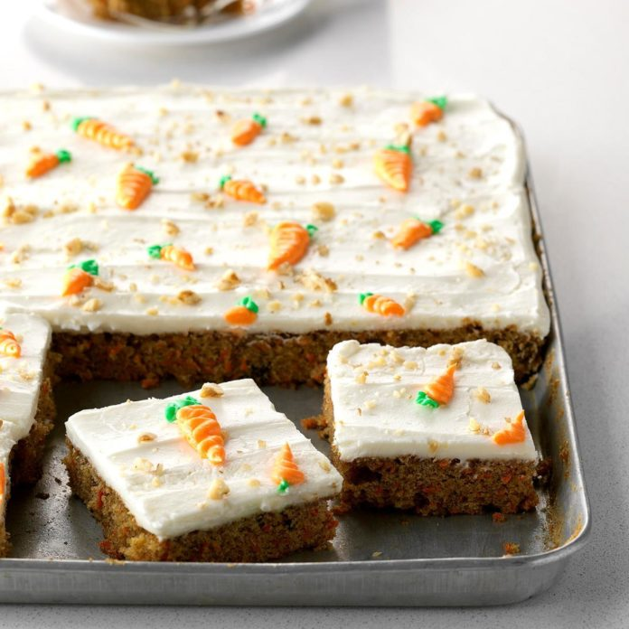

Carrot Sheet Cake

=> Click HERE for the perfect pan for this cake
Ingredients
- 4 large eggs, room temperature
- 1 cup vegetable oil
- 2 cups sugar
- 2 cups all-purpose flour
- 2 teaspoons baking soda
- 1/4 teaspoon baking powder
- 2 teaspoons ground cinnamon
- 1/2 teaspoon salt
- 3 cups shredded carrots
- 2/3 cup chopped walnuts
Frosting
- 1 package (8 ounces) cream cheese, softened
- 1/2 cup butter, softened
- 2 cups sugar
- 1/4 teaspoon baking powder
- 1 teaspoon vanilla extract
Directions
- In a bowl, beat eggs, oil and sugar until smooth.
- Combine flour, baking soda, baking powder, cinnamon and salt; add to egg mixture and beat well.
- Stir in carrots and walnuts.
- Pour into a greased 15x10x1-in. baking pan.
- Bake at 350° until a toothpick inserted in the center comes out clean, about 35 minutes.
- Cool on a wire rack.
- For frosting; beat cream cheese, butter and vanilla in a bowl until smooth; beat in sugar.
- Spread over cake.
- Sprinkle with nuts.
- Decorate as desired.
Best Kitchen Tip
For a clean cake release, use our recommended method for greasing a cake pan. Use an offset spatula to get smooth, professional-looking frosting. Frosted cake may be frozen.
Nutrition Information
| Nutrition Facts For 1 Piece | |
|---|---|
| Calories | 311 |
| Fat | 17g (5g saturated) |
| Cholesterol | 45mg |
| Sodium | 193mg |
| Carbohydrate | 38g |
| 29g sugars, 1g fiber | |
| Protein | 4g |